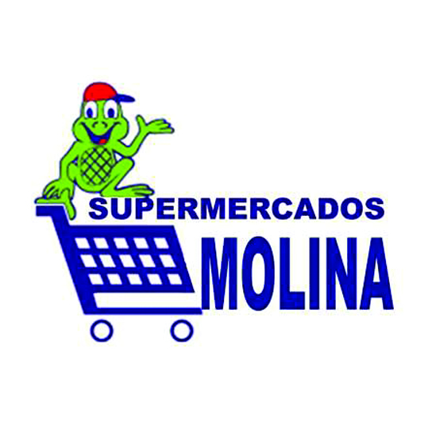

Nuevos productos
Eliminar productos
Inventario
Busqueda por ID
Busqueda por categoria
Proveedores
Menu
Ir a producto específico
Ir a categoría específica
Ir a proovedor específico
INVENTARIO
Vista completa del inventario del supermercado.